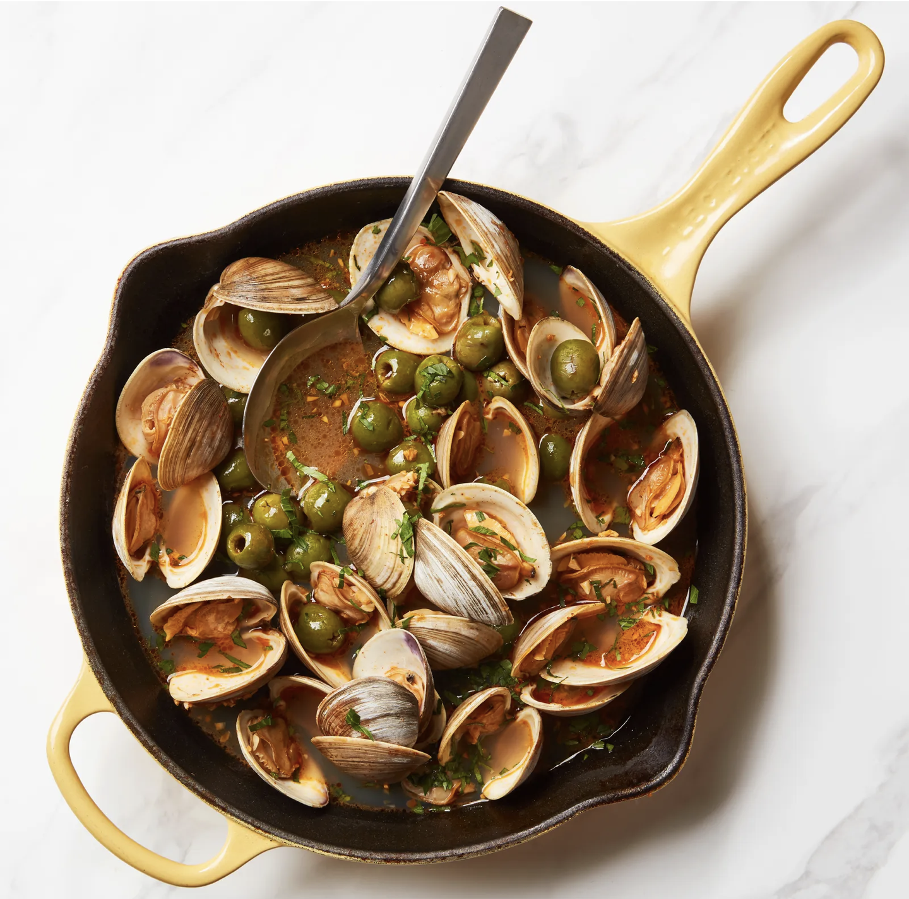

Clams With Sherry and Olives

Description
The complex flavor of this dish—briny, aromatic, slightly spicy—belies the extraordinarily simple method of actually making it. Please don’t be shy with the amount of bread you serve alongside—the clams are delicious, but the broth created by their nectar mixed with the dry Spanish sherry and buttery Italian olives is the real reason for the season.
Items
- 3 tb extra-vergin olive oil
- 6 garlic cloves, finely chopped
- 1 teaspoon piment d'Espelette
- fine sea salt
- 3 pounds [1.4 kg] small clams, such as littlenecks, scrubbed clean
- 1 cup [160 g] Castelvetrano olives
- 1 cup [240 ml] dry white wine
- ½ cup [120 ml] fino or manzanilla sherry
- ½ cup [20 g] finely chopped fresh flat-leaf parsley
- Crusty bread, for serving
Steps
- In a large Dutch oven or pot over medium-high heat, add the oil and garlic and cook, stirring, until the garlic is golden and fragrant, about 2 minutes.
- Add the piment d'Espelette and season with salt; cook for 10 seconds more, then stir in the clams, olives, wine, and sherry. Bring to a boil, then cover the pot with a tight-fitting lid, lower the heat to medium-low, and simmer until the clams open, 10 to 12 minutes.
- Uncover, remove and discard any clams that don't open, and add ¼ cup [10 g] of the parsley to the pot. Stir to combine and transfer to a serving platter.
- Sprinkle with the remaining ¼ cup [10 g] of parsley. Serve with crusty bread.